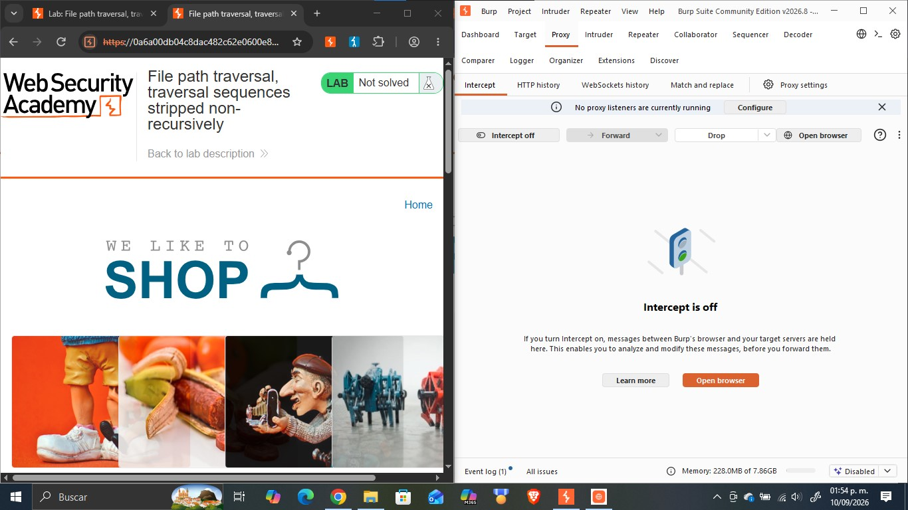
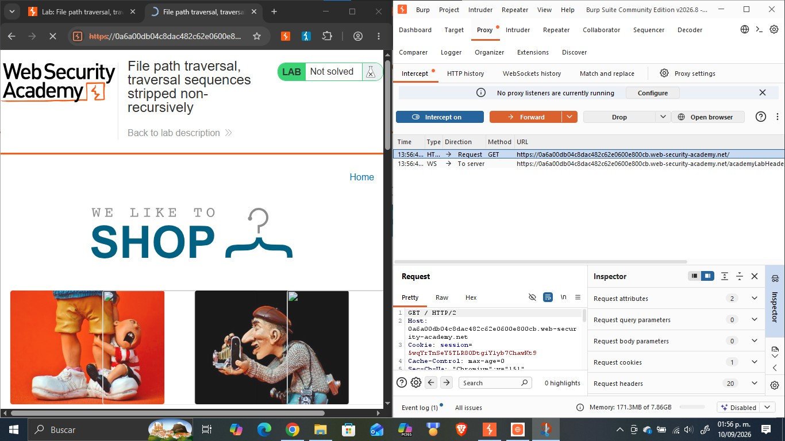
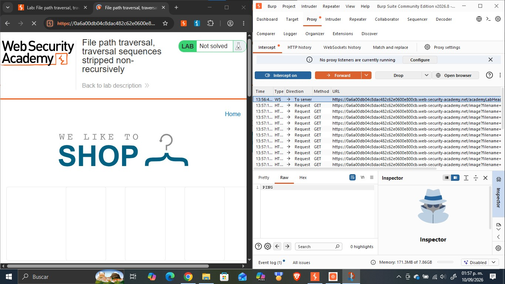
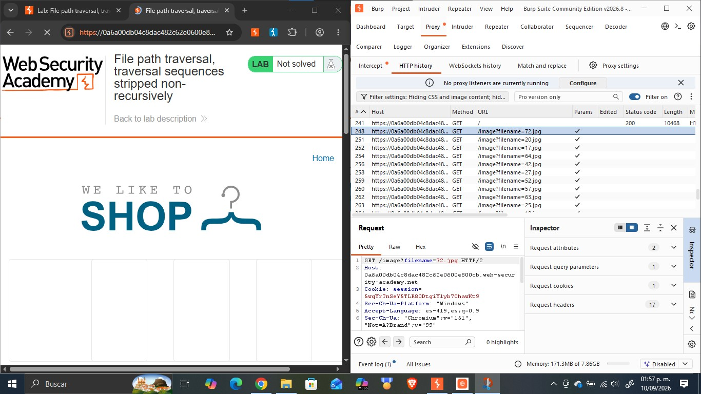
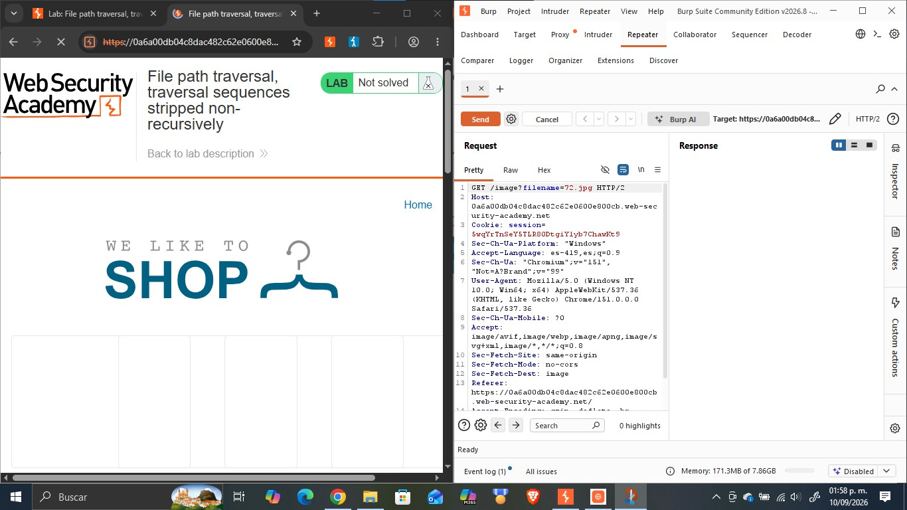
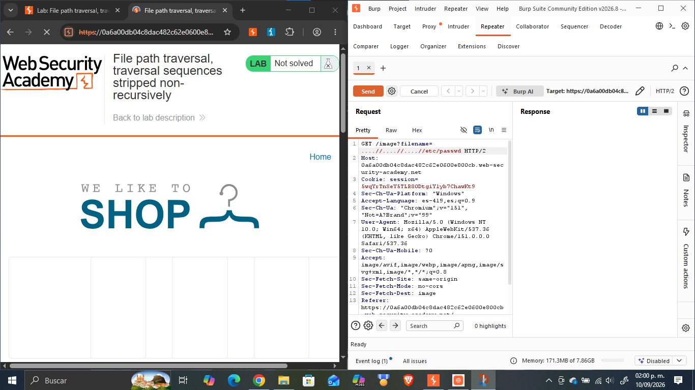
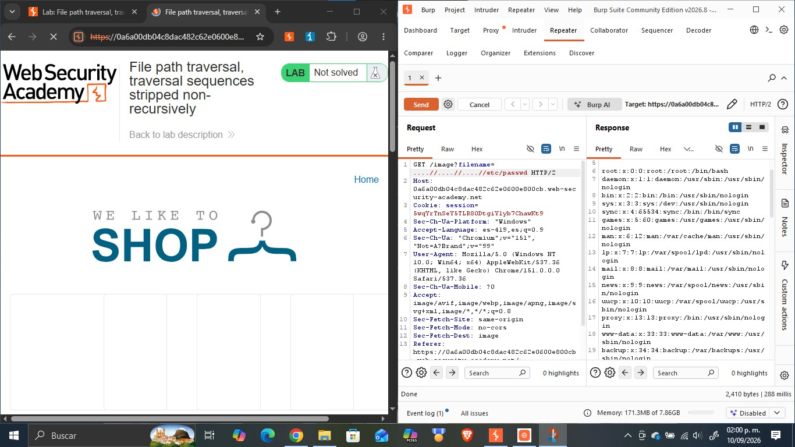
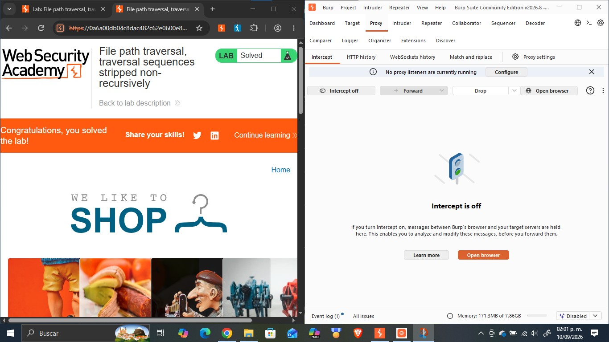

Objetivo
Este reporte documenta la resolución del laboratorio «File path traversal, traversal sequences stripped non-recursively» de PortSwigger Web Security Academy, cuyo objetivo es explotar una vulnerabilidad de path traversal en la funcionalidad de visualización de imágenes de una tienda en línea, sorteando un filtro que elimina las secuencias de traversal (../) de forma no recursiva con el fin de acceder a archivos del sistema operativo del servidor que no deberían ser accesibles públicamente. La actividad forma parte del portafolio de evidencias «Road to Hall of Fame» de la asignatura CNO IV Seguridad Informática y profundiza en los obstáculos comunes que las aplicaciones interponen frente a esta vulnerabilidad correspondiente a la categoría A01:2021 – Broken Access Control del OWASP Top 10, así como en las técnicas de anidamiento de payloads para evadirlos usando Burp Suite.
Desarrollo
Esta sección documenta el laboratorio realizado en la práctica: su ficha técnica, la fundamentación de la vulnerabilidad explotada, el procedimiento seguido paso a paso con la evidencia fotográfica integrada en cada paso, el análisis del payload utilizado y las medidas de mitigación recomendadas.
| Nombre del Laboratorio | Nivel | Tipo de Explotación | Objetivo del laboratorio |
|---|---|---|---|
| File path traversal, traversal sequences stripped non-recursively | Practitioner | Path Traversal / Directory Traversal bypass de un filtro de secuencias de traversal mediante el uso de secuencias anidadas (saneamiento no recursivo) en el parámetro filename. | Explotar la vulnerabilidad de path traversal presente en la funcionalidad de visualización de imágenes de producto, evadiendo el filtro de eliminación no recursiva de «../», para recuperar el contenido del archivo /etc/passwd del servidor. |
Explicación técnica de la vulnerabilidad
Este laboratorio presenta una variante del path traversal en la que la aplicación implementa una defensa previa: antes de utilizar el valor del parámetro filename, el servidor procesa la cadena enviada y elimina las secuencias de traversal ../. Sin embargo, esta defensa es defectuosa debido a que la eliminación de los caracteres se realiza de manera no recursiva (es decir, en una sola pasada lineal sobre la entrada).
Cuando la aplicación ejecuta un filtrado de una sola pasada, un atacante puede estructurar una secuencia anidada como ....//. Al ser procesada por el servidor, la función de sanitización detecta la coincidencia exacta de la cadena ../ que se encuentra en el centro (. [.. /] ./) y la borra. Al eliminar esos caracteres centrales, los elementos restantes del lado izquierdo (..) y del lado derecho (/) se unen en el string resultante, reconstruyendo una nueva secuencia ../ válida. Puesto que el filtro no vuelve a revisar la cadena modificada de forma recursiva, la nueva secuencia pasa directamente al sistema de archivos subyacente, permitiendo al atacante retroceder directorios hasta alcanzar archivos del sistema operativo como /etc/passwd. Esta falla ilustra los riesgos de confiar en saneamientos de entrada basados en eliminación lineal de patrones y corresponde a la categoría A01:2021 – Broken Access Control del OWASP Top 10.
Procedimiento paso a paso
Paso 1. Se abrió el laboratorio «File path traversal, traversal sequences stripped non-recursively» en el navegador integrado de Burp Suite, con Intercept desactivado, verificando el estado inicial «Not solved» de la tienda en línea «We Like To Shop».

Paso 2. Se activó la opción «Intercept on» en la pestaña Proxy de Burp Suite y se recargó la página principal, capturando la primera petición GET / enviada por el navegador hacia el servidor.

Paso 3. Al reenviar (Forward) las peticiones interceptadas, se observó en el historial HTTP que el navegador solicitaba múltiples recursos a través del endpoint /image, cada uno con un parámetro filename distinto, correspondientes a las imágenes de los productos de la tienda.

Paso 4. Se seleccionó la petición GET /image?filename=72.jpg en el historial HTTP y se examinaron sus cabeceras completas para confirmar la estructura exacta de la petición, incluyendo la cookie de sesión y el método utilizado.

Paso 5. La petición se envió a la pestaña Repeater de Burp Suite (Send to Repeater) para poder modificarla y reenviarla de forma controlada las veces que fuera necesario.

Paso 6. En Repeater se sustituyó el valor del parámetro filename por la secuencia anidada ....//....//....//etc/passwd, aprovechando que la aplicación únicamente elimina las secuencias ../ de forma no recursiva.

Paso 7. Se envió la petición modificada mediante el botón Send y se analizó la respuesta del servidor, confirmando el código de estado 200 OK y verificando que el cuerpo de la respuesta contenía el listado completo de usuarios del sistema, lo que evidenció la lectura exitosa del archivo /etc/passwd.

Paso 8. Se regresó al navegador y se recargó la página del laboratorio, confirmando que el banner superior mostraba el mensaje «Congratulations, ¡you solved the lab!» y que el estado del laboratorio había cambiado de «Not solved» a «Solved».

Explicación del payload
El payload utilizado fue ....//....//....//etc/passwd, enviado como valor del parámetro filename en la petición GET /image?filename=....//....//....//etc/passwd.
A diferencia de un ataque directo, este payload se aprovecha directamente del funcionamiento del algoritmo de filtrado del servidor. Al recibir la entrada, el servidor busca y remueve la cadena ../. En el segmento ....//, la subsecuencia ../ se encuentra ubicada internamente entre el primer punto y la segunda diagonal (. [.. /] ./). Al ser eliminada dicha subsecuencia por el filtro no recursivo, los caracteres extremos sobrantes se unen automáticamente: los dos puntos iniciales (..) se combinan con la diagonal final (/), dando como resultado una secuencia de traversal equivalente a ../. Al repetir este patrón tres veces (....//....//....//), la cadena se transforma internamente en ../../../etc/passwd, lo que permite navegar tres niveles hacia arriba en el sistema de archivos (saliendo del directorio de imágenes) hasta llegar a la raíz y retornar el archivo /etc/passwd. El payload es efectivo porque explota la falta de recursividad en el proceso de saneamiento.
Mitigación recomendada
Para prevenir y corregir esta vulnerabilidad se recomienda:
- Implementar filtrado recursivo: En caso de aplicar funciones de eliminación de caracteres, se debe asegurar que el proceso se ejecute de manera recursiva (en un bucle continuo) hasta que la cadena resultante ya no contenga ninguna coincidencia del patrón ../.
- Uso de listas blancas (allow-list): Emplear una lista permitida de nombres de archivo o un identificador indirecto (por ejemplo, un ID numérico mapeado internamente) en lugar de aceptar nombres de archivo directamente desde las peticiones del cliente.
- Canonicalización y validación de rutas: Resolver la ruta resultante en su forma canónica (mediante funciones del lenguaje como realpath()) y verificar estrictamente que se mantenga dentro del directorio base autorizado antes de leer el recurso.
- Principio de mínimo privilegio: Ejecutar el servidor web con un usuario que posea permisos estrictamente limitados en el sistema de archivos.
- Aislamiento del entorno: Utilizar entornos aislados como contenedores, chroot o jails para limitar el acceso del proceso únicamente a las carpetas indispensables para la aplicación.
- Pruebas de seguridad continuas: Incorporar análisis de código estático (SAST) y dinámico (DAST) con casos de prueba específicos para bypasses de path traversal con cadenas anidadas.
Resultados
Se logró explotar exitosamente la vulnerabilidad de path traversal presente en el endpoint /image, evadiendo el filtro de eliminación de caracteres implementado por la aplicación. En un primer momento se confirmó que el servidor elimina las secuencias simples de traversal; sin embargo, al enviar en el parámetro filename la secuencia anidada ....//....//....//etc/passwd, se obtuvo una respuesta HTTP 200 OK cuyo cuerpo contenía el contenido completo del archivo /etc/passwd, mostrando cuentas de usuario del sistema como root, daemon, bin, sys, www-data, peter, carlos, entre otras. El laboratorio de PortSwigger confirmó la explotación al actualizar su estado de «Not solved» a «Solved». El resultado demuestra que eliminar patrones de forma no recursiva no constituye una medida de seguridad efectiva.
Conclusión
Este laboratorio permitió comprender cómo los mecanismos de sanitización incompletos pueden ser evadidos mediante la estructuración táctica del payload. Se demostró de manera práctica que el borrado no recursivo de caracteres peligrosos (../) permite al atacante anticipar la transformación de la cadena dentro del servidor para lograr que la aplicación reconstruya la secuencia maliciosa por sí misma. Asimismo, se consolidó el uso de Burp Suite (Proxy, HTTP History y Repeater) para interceptar, modificar y validar la respuesta del servidor. Esta actividad refuerza la lección de que los controles de seguridad no deben basarse en modificar o limpiar entradas maliciosas, sino en la validación estricta mediante listas blancas y la canonicalización de rutas. Como siguiente paso en el portafolio «Road to Hall of Fame», se continuará con el estudio de otras variantes de bypass en vulnerabilidades de Path Traversal.
Referencias bibliográficas
- PortSwigger. (s.f.). File path traversal, traversal sequences stripped non-recursively. PortSwigger Web Security Academy. https://portswigger.net/web-security/file-path-traversal/lab-sequences-stripped-non-recursively
- PortSwigger. (s.f.). Path traversal. PortSwigger Web Security Academy. https://portswigger.net/web-security/file-path-traversal
- OWASP. (2021). A01:2021 – Broken Access Control. OWASP Top 10. https://owasp.org/Top10/A01_2021-Broken_Access_Control/
- PortSwigger. (s.f.). Burp Suite documentation. https://portswigger.net/burp/documentation